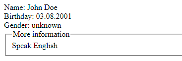
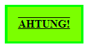

class NewElement extends HTMLElement { i
constructor() {
super();
}
static get observedAttributes() { i
return [attr1, attr2, attr3];
}
connectedCallback() { i
}
disconnectedCallback() { i
}
attributeChangedCallback(name, oldValue, newValue) { i
}
adoptedCallback() { i
}
}
customElements.define('new-element', NewElement); i
let elementClass = customElements.get('new-element'); i
let promiss = customElements.whenDefined('new-element'); i
<shadow-element name="Jonny" id="openShadow"></shadow-element> <div id="addShadow"></div>
class ShadowElement extends HTMLElement {
connectedCallback() {
const shadow = this.attachShadow({mode:"open"}); i
let tree = `<div>${this.getAttribute('name')} Shadow</div>`;
shadow.innerHTML = tree; i
}
}
customElements.define('shadow-element', ShadowElement);
const openShadow = document.getElementById('openShadow');
console.log(openShadow.shadowRoot); i
const anchor = document.getElementById('addShadow'); i
const secretLink = anchor.attachShadow({mode:"closed"}); i
secretLink.innerHTML = '<span>⚓</span>'; i
<div id="element">Просто элемент</div> <template id="insert"> i <style> .text { margin: 0; color: green; font-weight: bold; } strong { color: crimson; font-style: italic; } </style> <p class="text"> Пример <strong>текста</strong>! </p> <script> i console.log('Шаблон добавлен'); </script> </template>
const template = document.getElementById('insert');
const element = document.getElementById('element');
element.onclick = function() {
let copy = template.content.cloneNode(true); i
let shadowLink = element.attachShadow({mode:"closed"}); i
shadowLink.append(copy); i
};
<user-card> i <span slot="username">John</span> i <span slot="username">Doe</span> i <span slot="bday">03.08.2001</span> i <div>Speak English</div> i </user-card>
customElements.define('user-card', class extends HTMLElement { i
connectedCallback() {
this.attachShadow({mode:"open"});
this.shadowRoot.innerHTML = `см. шаблон HTML ниже`; i
}
});
Шаблон HTML <div>Name: <slot name="username"></slot></div> i <div>Birthday: <slot name="bday"></slot></div> i <div>Gender: <slot name="gender">unknown</slot></div> i <fieldset><legend>More information</legend> i <slot></slot> </fieldset>
Результат:
Шаблон:
<template id="menu-tmp">
<style>
.menu.closed > ul {
display: none;
}
</style>
<div class="menu">
<slot name="title"></slot>
<ul>
<slot name="item"></slot>
</ul>
</div>
</template>
Пользовательский элемент:
<custom-menu id="menu">
<span slot="title">Explosives:</span>
<li slot="item">Hexogen</li>
<li slot="item">Trotyl</li>
<li slot="item">Dynamite</li>
</custom-menu>
Код JS:
const menuTmp = document.getElementById('menu-tmp');
const title = document.querySelector('[slot="title"]');
customElements.define(
'custom-menu', class extends HTMLElement {
connectedCallback() {
this.attachShadow({mode:"open"}); i
this.shadowRoot.append(
menuTmp.content.cloneNode(true)
);
const menu = this.shadowRoot.querySelector('.menu'); i
menu.addEventListener('pointerdown', e => { i
e.preventDefault();
menu.classList.toggle('closed');
});
menu.addEventListener('slotchange', e => { i
let slot = e.target; i
console.log(`Slot changed: ${slot.name}`); i
console.log(slot.assignedNodes({flatten: true})); i
console.log(slot.assignedElements()); i
});
}
}
);
console.log(title.assignedSlot); i
Стили документа i <div class="dark-theme"> <template id="tpl"> i Стили шаблона i <slot></slot> </template> <custom-dialog centered> i <span class="hail">Ahtung!</span> </custom-dialog> </div>
Стили документа:
custom-dialog { i
border-color: lime;
}
span { i
text-transform: uppercase;
font-weight: 700;
}
Стили шаблона:
:host { i
display: inline-block;
padding: 1em;
border: 3px solid red;
}
:host([centered]) { i
position: absolute;
left: 50%;
transform: translateX(-50%);
}
:host-context(.dark-theme) { i
background-color: greenyellow;
}
slot { i
text-decoration: overline;
}
::slotted(.hail) { i
text-decoration: underline;
}
Результат:
Стили документа:
custom-dialog {
--user-color: blue; i
}
Стили шаблона:
:host {
padding: 1em;
display: inline-block;
border: 3px solid lime;
}
.hail {
color: var(--user-color, black); i
}
События, которые произошли в теневом DOM, но пойманы снаружи этого DOM, имеют элемент-хозяин в качестве целевого элемента event.target
const shadow = document.getElementById('shadow');
const shadowLink = shadow.attachShadow({mode:"closed"});
const insideElement = document.createElement('div'); i
insideElement.insertAdjacentHTML(
'beforeend', '<slot></slot>' i
);
insideElement.insertAdjacentHTML(
'beforeend', '<p>Текст в тени</p>' i
);
shadowLink.append(insideElement);
function log(e) { i
console.log(`Node: ${this.tagName} type: ${e.detail}`);
console.log(e.target);
console.log(e.composedPath()); i
}
insideElement.onclick = log; i
document.body.onclick = log; i
// Эмулируем события
let text = insideElement.querySelector('p');
let eventOne = new CustomEvent('click', { i
bubbles: true,
composed: true,
detail: 'composed'
});
let eventTwo = new CustomEvent('click', { i
bubbles: true,
detail: 'not composed'
});
text.dispatchEvent(eventOne); i
text.dispatchEvent(eventTwo); i